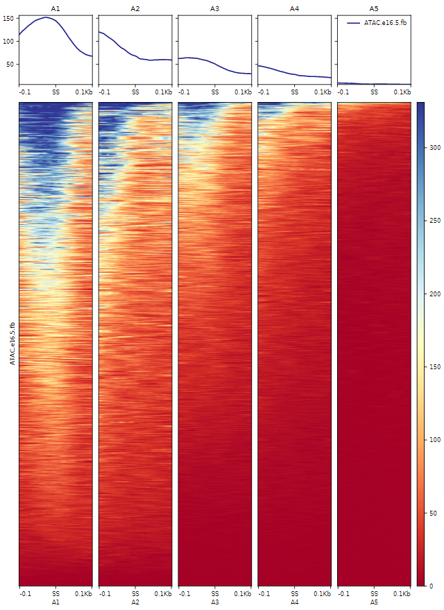
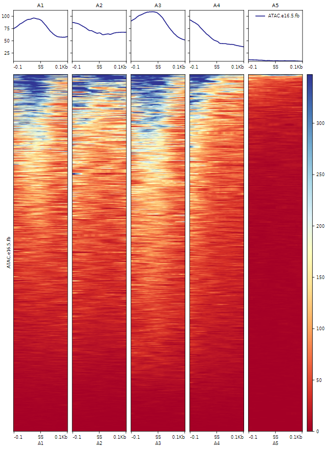
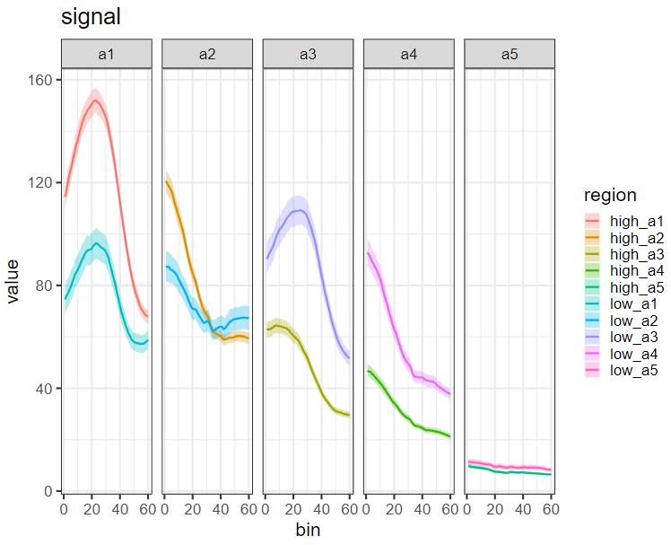

表观分析
该模块主要用于描述剪切位点附近区域表观信号分布。
signalProfile
绘制剪切位点附近信号热图分布，使用进行绘制。 参数设置：
- -o: 输出文件
- -e: 事件文件
- -bw: bigwig文件
- -ssl: 剪切位点标签
示例
$ astk pf -i result/fb_e11_based/psi/fb_e11_16_AF_case.psi \
-psi 0.8 -o result/fb_e11_based/psi/fb_16_AF_high.psi
$ astk pf -i result/fb_e11_based/psi/fb_e11_16_AF_case.psi \
-psi -0.2 -o result/fb_e11_based/psi/fb_16_AF_low.psi
$ astk signalProfile -o output/fb_16_AF_high_ATAC.png \
-e result/fb_e11_based/psi/fb_16_AF_high.psi \
-bw ATAC.e16.5.fb.bigwig \
-ssl A1 A2 A3 A4 A5 -fmt png
$ astk signalProfile -o output/fb_16_AF_low_ATAC.png \
-e result/fb_e11_based/psi/fb_16_AF_low.psi \
-bw ATAC.e16.5.fb.bigwig \
-ssl A1 A2 A3 A4 A5 -fmt png
fb_16_AF_high_ATAC.png 
fb_16_AF_low_ATAC.png 
sp2
用于两组信号比较
参数设置
- -mat: 由signalProfile 生成的*.mat.gz文件
- -o: 输出文件
- -gn: 组名
- --width: 图宽
- --height: 图高
示例
$ astk sp2 -mat output/fb_16_AF_*_ATAC.mat.gz \
-o output/fb_e16.5_AF_atac.ecmp.pdf -gn high low --width 10 --height 8
